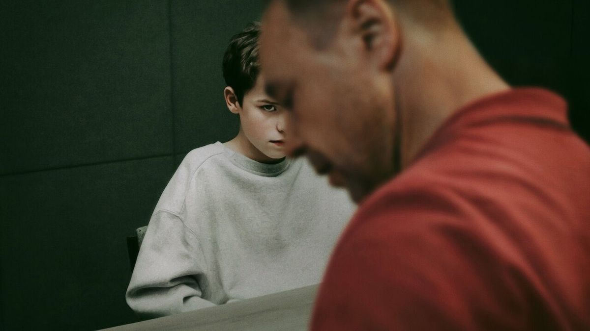
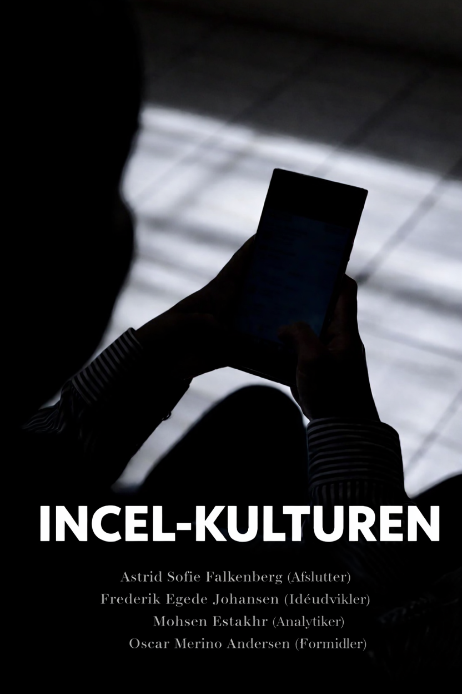

Gruppemedlemmer
- Astrid Sofie Falkenberg, asfa0002@stud.ek.dk, Afslutter
- Frederik Egede Johansen, frjo0008@stud.ek.dk, Idéudvikler
- Mohsen Estakhr, moes0001@stud.ek.dk, Analytiker
- Oscar Bertram Merino Andersen, osan0001@stud.ek.dk, Formidler
Om projektet
Projektets forside til den faglige struktur. Her finder du gruppemedlemmer, indholdsfortegnelse, indledning og motivation samt problemstilling, før resten af opgaven fortsætter på egne undersider.

Det er ikke tilfældigt, at Netflix-serien Adolescence vandt prisen for Årets Film 2025 og seriens hovedperson, Owen Cooper, vandt en Golden Globe. Serien behandler nemlig et højaktuelt, digitalt kulturelt emne om, hvordan incel-kulturen påvirker unge mennesker. Det er et emne, der er i stigning både nationalt og internationalt (Forundersøgelse - Incelfællesskaber i stor vækst, 2025). I serien afsløres det, hvordan sociale medier og ekstreme kvindehadende holdninger har radikaliseret den 13-årige Jamie og ført til drabet af hans kvindelige klassekammerat (Adolescence: Derfor gør film og tv-serier os klogere, 2025).
Manosfæren er et fællesbegreb for online fællesskaber og meningsdannere, der deler specifikke opfattelser af køn og maskulinitet, ofte med et kritisk syn på ligestilling. En central del af manosfæren er incel-kulturen, der omfatter mænd, der lever i ufrivilligt cølibat (involuntary celibate) (Forundersøgelse - Incelfællesskaber i stor vækst, 2025). Incel-ideologien bygger på en fordrejet forestilling om maskulinitet, hvor mænd opfatter sig som berettigede til seksuelle relationer med kvinder. Når denne forventning ikke opfyldes, opstår der en dyb følelse af mislykkethed og uretfærdighed, som forstærkes i online fællesskaber, hvor medlemmer bekræfter hinanden i ekstreme synspunkter om kønsforestillinger. Resultatet er ofte radikalisering og kvindehad, da fællesskaberne former og opretholder faste og ekstreme kønsforestillinger (Forundersøgelse - Incelfællesskaber i stor vækst, 2025).
Vi har valgt at fordybe os i manosfæren med særligt fokus på incel-kulturen, fordi det er et emne, der både er aktuelt og komplekst. Det handler ikke bare om ensomme mænd på nettet, men om, hvordan digitale fællesskaber kan ændre menneskers syn på køn, maskulinitet og i værste fald føre til had og vold. Adolescence viser netop, hvor farligt det kan blive, når unge bliver påvirket af ekstreme holdninger online. Vi synes, det er vigtigt at forstå, hvordan sådanne fællesskaber opstår og vokser - især fordi det ofte er unge mænd, der trækkes ind i disse fællesskaber (Forundersøgelse - Incelfællesskaber i stor vækst, 2025). Emnet berører både psykologi, kultur og teknologi, og det gør det særligt relevant at undersøge. Det er desuden relevant at undersøge, hvordan algoritmer og sociale medieplatforme bidrager til spredningen af disse ideer.
Vi vil i denne opgave derfor undersøge fænomenet incel. Vi vil blandt andet beskrive incel-kulturen som en digital kultur, dens udbredelse samt årsagerne til, at incel-fællesskaber ser ud til at vokse. Herunder vil vi undersøge, hvilken betydning algoritmer har, og hvorfor algoritmerne øger væksten i disse fællesskaber. Vi vil også undersøge, hvorfor det særligt er unge mænd, som er i risiko for online-radikalisering. Til sidst vil vi på baggrund af vores analyse diskutere, hvordan sociale mediers algoritmer og digitale fællesskaber påvirker unge mænds selvforståelse, samt hvordan ansvaret fordeler sig mellem platforme, brugere og samfundet.
Problemstilling
Hvordan bidrager anbefalingsalgoritmer på TikTok og YouTube til udbredelse af incel-relateret indhold, og hvordan påvirker det unge danske mænds selvopfattelse og digitale adfærd?
Teoretisk indledning samt 1. og 2. semester-teori.
Kvalitativt interview og diskursanalyse i fuld længde.
Hele analyseafsnittet med interviewfund, diskurser og algoritmer.
Hele diskussionen om platforme, ansvar og normalisering.
Projektets samlede konklusion og afgrænsninger.
SoMe-video, hjemmeside, proces og formål bag medieproduktet.
Bøger, artikler, websites og kilder samlet som i projektet.
Den fulde tekst om brugen af AI og NotebookLM i processen.
Interviewguide og diskursanalyse som selvstændig bilagsside.
Download
Her kan du hente den fulde PDF-version af projektet med alle afsnit samlet i dokumentform.

Download PDF